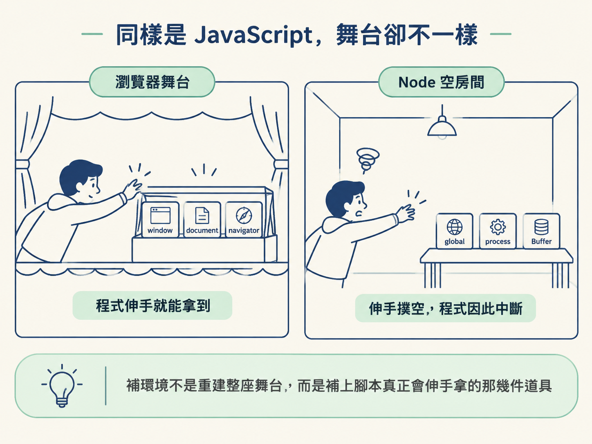
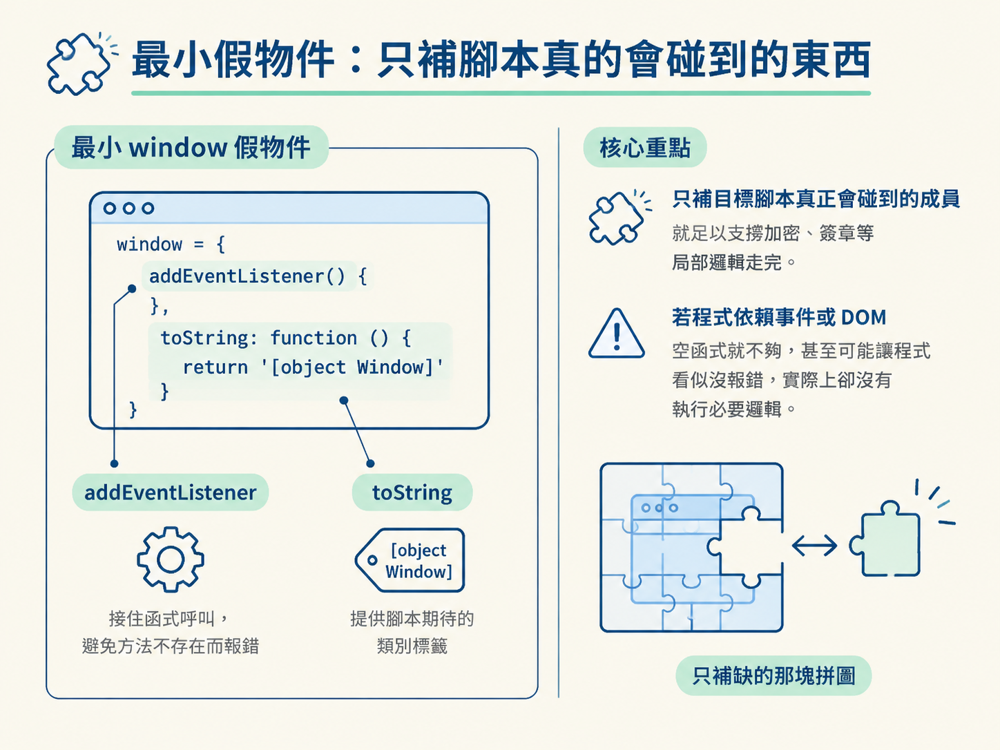
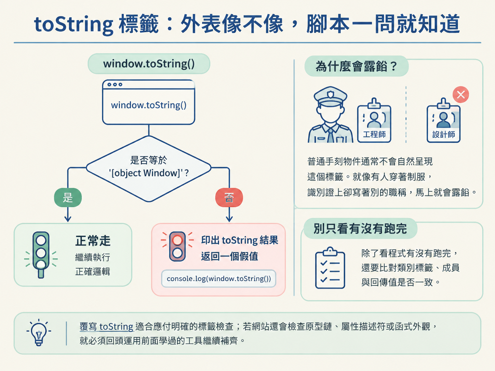

做網站逆向時，你可能已經在 DevTools 找到負責加密的 JavaScript，也看懂了它的輸入與輸出。接著，你把程式碼交給 execjs，準備在 Node 裡重現結果，卻立刻看到 window is not defined。
問題通常不在加密邏輯，而在執行環境。這正是「抓取 → 反爬 → 逆向」流程中很容易卡住的一段：你已經找到目標程式碼，但網站可能依賴瀏覽器物件，甚至主動檢查自己是不是被搬到了 Node。
前面學過的原型鏈與屬性描述符，可以幫你追查成員從哪裡來、讀取時做了什麼。這一節則把視角拉高，看看瀏覽器與 Node 的環境差異，以及如何用最小的假物件補上腳本真正需要的部分。
瀏覽器與 Node 都能執行 JavaScript，但它們提供的「舞台道具」不同。瀏覽器程式習慣伸手就拿 window、document 與 navigator；Node 則提供 global、process 與 Buffer 等符號。
把瀏覽器程式直接搬進 Node，就像把一齣需要布景的舞台劇搬到空房間。台詞沒有變，但演員伸手拿不到道具，程式自然會中斷。
因此，補環境不是重新實作整個瀏覽器。它的核心是先觀察目標腳本碰了哪些物件，再補出足以讓它繼續執行的外觀與行為。

在瀏覽器裡，window 是全域物件。許多網站程式會把函式、狀態或設定掛在它上面，也會直接讀取 window.xxx。
到了 Node，對應的全域物件是 global，而且預設沒有名為 window 的物件。只要原始程式碰到 window.xxx，便可能因為「window is not defined」停下來。
最省事的處理方式，是讓 window 指向 Node 的全域物件。這適合先確認程式能否跑通，也適合腳本大量依賴全域成員的情況。不過，若網站會檢查環境，直接共用同一個物件也可能讓 Node 的特徵跟著露出來。
環境差異不只在於 Node 缺少瀏覽器物件。反過來看，Node 還多了瀏覽器不該有的東西，例如 global、process、Buffer、__dirname 與 __filename。
網站的偵測程式可能檢查這些符號。它就像看到演員口袋裡露出工作證：即使舞台布置得很像瀏覽器，只要 process 還在，就可能判斷目前其實是在 Node 或自動化工具中執行。
下面這個最小範例，採取的是直接清掉明顯特徵的做法：
delete global
delete process這種做法適合用來理解檢測機制，或處理只探測少數符號的簡單腳本。但它不是萬用解法。真實網站可能檢查更多特徵，而目標程式本身也可能需要這些 Node 能力；如果一股腦全部刪除，反而可能讓其他程式碼壞掉。
因此，逆向時要先找出腳本實際檢查什麼，再決定哪些特徵需要隱藏。補環境的目標是「剛好夠用」，不是把所有東西都刪光。
還有一個常被忽略的細節：程式若沒有使用 let、const 或 var，而是直接寫下 x = 100，這類裸賦值會把名稱放進當下的全域環境。
在瀏覽器裡，它會和 window 產生關係；在 Node 的這類執行情境中，則會落到 global。如果目標程式一邊裸賦值，一邊又從 window 讀取同一個名稱，兩邊沒有接在一起，就可能出現「明明剛剛寫入，現在卻讀不到」的狀況。
這也是為什麼讓 window 與 Node 的全域環境接上，常被拿來當作快速驗證的起手式。不過，當你需要控制暴露出去的成員，手刻假物件會更精準。
假設你在 DevTools 追程式時，發現目標只會呼叫 window.addEventListener，並檢查 window.toString()。這時不必複製整個瀏覽器，可以先準備一個最小版本：
window = {
addEventListener() {
},
toString: function () {
return '[object Window]'
}
}這個物件補了兩種需求。空的 addEventListener 負責接住函式呼叫，避免程式因為方法不存在而報錯；toString 則負責提供腳本期待看到的類別標籤。
這種最小假物件適合用來重現加密、簽章或參數生成等局部邏輯，因為你只需要支撐目標函式走完。若程式真的依賴事件觸發、DOM 操作或完整的瀏覽器行為，只有空函式就不夠，甚至可能讓程式看似沒報錯，實際上卻沒有執行必要邏輯。

瀏覽器程式不一定總是使用 window。它也可能透過 self 或 top 取得同一個物件。你補了 window，卻漏掉這些別名，腳本換個名字存取時仍然會失敗。
// window = self = top = {}
self = top = window這行程式讓三個名稱指向同一個假物件。它們不是三份各自獨立的複製品，而是通往同一個物件的三塊門牌。
這個差別很重要。若你分別建立三個物件，腳本從 window 寫入資料，再從 self 讀取時，可能仍然拿不到同一份狀態。
網站要判斷物件是真是假，不一定需要複雜的偵測。它可能只呼叫一次 window.toString()，看看結果是不是 '[object Window]'。
普通手刻物件通常不會自然呈現這個標籤。對偵測程式來說，這就像有人穿著制服，識別證上卻寫著別的職稱，馬上就會露餡。
if (window.toString() === '[object Window]') {
// 正常走
console.log("正常走")
} else {
// 返回一个假值
console.log(window.toString())
console.log("返回一个假值")
}這段 demo 展示了常見的分流方式：標籤符合預期，就走正常邏輯；標籤不符，便轉去回傳假值。麻煩之處在於，程式不一定會直接報錯。它可能繼續執行，卻故意給你錯誤結果，讓你誤以為是加密演算法沒有還原成功。
因此，在 DevTools 與 Node 之間比對結果時，不能只看「有沒有跑完」。還要確認關鍵物件的類別標籤、成員與回傳值是否一致。覆寫 toString 適合應付這種明確的標籤檢查；如果網站還會檢查原型鏈、屬性描述符或函式外觀，就必須回頭運用前面學過的工具繼續補齊。

| 做法 | 適合的情況 | 不適合的情況 |
|---|---|---|
讓 window 接到 Node 的全域物件 |
先快速跑通程式，或目標大量使用全域變數 | 網站會檢查 Node 特徵，或需要嚴格控制可見成員 |
手刻最小的 window 假物件 |
已從 DevTools 找到必要成員，只想重現局部邏輯 | 程式依賴完整事件、DOM 或其他真實瀏覽器行為 |
實務上不必一開始就追求完整。可以先用最小物件讓程式往前走，再根據下一個錯誤或檢測點補成員。這比較像沿著腳印追查，而不是閉著眼睛蓋一座完整瀏覽器。
瀏覽器 JavaScript 搬進 Node 會壞，通常不是語法變了，而是執行環境不同。瀏覽器提供window，Node 提供global與process等專屬符號；目標腳本可能缺少需要的物件，也可能從多出來的特徵看穿 Node。補環境的核心，是依照程式實際使用與檢查的內容，補上必要成員、接好self與top等別名，並讓toString標籤符合預期。
這個觀念和前面的原型鏈、屬性描述符正好接在一起：當最小假物件仍然無法通過檢測，你就要繼續追查物件從哪裡繼承成員、屬性如何被讀取，以及外觀是否符合真實瀏覽器。
目前看到的是「最小可用的假物件」。後續還會把八個前端物件與 Proxy 監測完整走一遍。下一步則會把 execjs、屬性分析與環境修補放在一起，實際拆解微信公眾平台的密碼加密案例。